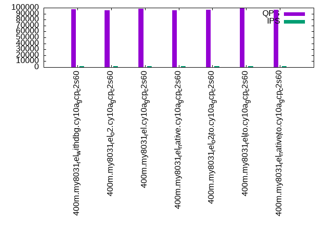

Introduction
This is a report for the insert benchmark with 400M docs and 20 client(s). It is generated by scripts (bash, awk, sed) and Tufte might not be impressed. An overview of the insert benchmark is here and a short update is here. Below, by DBMS, I mean DBMS+version.config. An example is my8020.c10b40 where my means MySQL, 8020 is version 8.0.20 and c10b40 is the name for the configuration file.
This is a report for the insert benchmark with 400M docs and 20 client(s). It is generated by scripts (bash, awk, sed) and Tufte might not be impressed. An overview of the insert benchmark is here and a short update is here. Below, by DBMS, I mean DBMS+version.config. An example is my8020.c10b40 where my means MySQL, 8020 is version 8.0.20 and c10b40 is the name for the configuration file.The test server is c2-standard-60 from GCP with 30 cores, hyperthreads disabled, 240G RAM and 3T of NVMe (XFS with RAID0 over 8 devices). The benchmark was run with 20 clients and there were 1 or 2 connections per client (1 for queries, 1 for inserts). It uses 1 table. It loads 400M rows per table without secondary indexes, creates secondary indexes, loads another 400M rows per table then does 3 read+write tests for one hour each that do queries as fast as possible with 100, 500 and then 1000 writes/second/client concurrent with the queries. The database is cached by the storage engine and the only IO is for writes. Clients and the DBMS share one server. The per-database configs are in the per-database subdirectories here.
The tested DBMS are:
- my8031_rel_withdbg.cy10a_gcp_c2s60 - MySQL 8.0.31, the cy10a_gcp_c2s60 config and the build used CMAKE_BUILD_TYPE=RelWithDebInfo
- my8031_rel_o2.cy10a_gcp_c2s60 - MySQL 8.0.31, the cy10a_gcp_c2s60 config and the build used CMAKE_BUILD_TYPE=Release -O2
- my8031_rel.cy10a_gcp_c2s60 - MySQL 8.0.31, the cy10a_gcp_c2s60 config and the build used CMAKE_BUILD_TYPE=Release
- my8031_rel_native.cy10a_gcp_c2s60 - MySQL 8.0.31, the cy10a_gcp_c2s60 config and the build used CMAKE_BUILD_TYPE=Release -march=native -mtune=native
- my8031_rel_o2_lto.cy10a_gcp_c2s60 - MySQL 8.0.31, the cy10a_gcp_c2s60 config and the build used CMAKE_BUILD_TYPE=Release -flto -O2
- my8031_rel_lto.cy10a_gcp_c2s60 - MySQL 8.0.31, the cy10a_gcp_c2s60 config and the build used CMAKE_BUILD_TYPE=Release -flto
- my8031_rel_native_lto.cy10a_gcp_c2s60 - MySQL 8.0.31, the cy10a_gcp_c2s60 config and the build used CMAKE_BUILD_TYPE=Release -flto -march=native -mtune=native
Contents
- Summary
- l.i0: load without secondary indexes
- l.x: create secondary indexes
- l.i1: continue load after secondary indexes created
- q100.1: range queries with 100 insert/s per client
- q500.1: range queries with 500 insert/s per client
- q1000.1: range queries with 1000 insert/s per client
Summary
The numbers are inserts/s for l.i0 and l.i1, indexed docs (or rows) /s for l.x and queries/s for q*.2. The values are the average rate over the entire test for inserts (IPS) and queries (QPS). The range of values for IPS and QPS is split into 3 parts: bottom 25%, middle 50%, top 25%. Values in the bottom 25% have a red background, values in the top 25% have a green background and values in the middle have no color. A gray background is used for values that can be ignored because the DBMS did not sustain the target insert rate. Red backgrounds are not used when the minimum value is within 80% of the max value.
| dbms | l.i0 | l.x | l.i1 | q100.1 | q500.1 | q1000.1 |
|---|---|---|---|---|---|---|
| 400m.my8031_rel_withdbg.cy10a_gcp_c2s60 | 265957 | 145862 | 178811 | 97499 | 97640 | 96477 |
| 400m.my8031_rel_o2.cy10a_gcp_c2s60 | 263158 | 103680 | 177778 | 96020 | 96621 | 95125 |
| 400m.my8031_rel.cy10a_gcp_c2s60 | 272480 | 116308 | 183993 | 97884 | 98484 | 96715 |
| 400m.my8031_rel_native.cy10a_gcp_c2s60 | 269179 | 140534 | 182149 | 95677 | 96257 | 94450 |
| 400m.my8031_rel_o2_lto.cy10a_gcp_c2s60 | 261952 | 156902 | 178731 | 96858 | 97086 | 95753 |
| 400m.my8031_rel_lto.cy10a_gcp_c2s60 | 268998 | 122317 | 180914 | 99113 | 99607 | 97977 |
| 400m.my8031_rel_native_lto.cy10a_gcp_c2s60 | 268637 | 119077 | 180505 | 96307 | 96865 | 95396 |
This table has relative throughput, throughput for the DBMS relative to the DBMS in the first line, using the absolute throughput from the previous table.
| dbms | l.i0 | l.x | l.i1 | q100.1 | q500.1 | q1000.1 |
|---|---|---|---|---|---|---|
| 400m.my8031_rel_withdbg.cy10a_gcp_c2s60 | 1.00 | 1.00 | 1.00 | 1.00 | 1.00 | 1.00 |
| 400m.my8031_rel_o2.cy10a_gcp_c2s60 | 0.99 | 0.71 | 0.99 | 0.98 | 0.99 | 0.99 |
| 400m.my8031_rel.cy10a_gcp_c2s60 | 1.02 | 0.80 | 1.03 | 1.00 | 1.01 | 1.00 |
| 400m.my8031_rel_native.cy10a_gcp_c2s60 | 1.01 | 0.96 | 1.02 | 0.98 | 0.99 | 0.98 |
| 400m.my8031_rel_o2_lto.cy10a_gcp_c2s60 | 0.98 | 1.08 | 1.00 | 0.99 | 0.99 | 0.99 |
| 400m.my8031_rel_lto.cy10a_gcp_c2s60 | 1.01 | 0.84 | 1.01 | 1.02 | 1.02 | 1.02 |
| 400m.my8031_rel_native_lto.cy10a_gcp_c2s60 | 1.01 | 0.82 | 1.01 | 0.99 | 0.99 | 0.99 |
This lists the average rate of inserts/s for the tests that do inserts concurrent with queries. For such tests the query rate is listed in the table above. The read+write tests are setup so that the insert rate should match the target rate every second. Cells that are not at least 95% of the target have a red background to indicate a failure to satisfy the target.
| dbms | q100.1 | q500.1 | q1000.1 |
|---|---|---|---|
| my8031_rel_withdbg.cy10a_gcp_c2s60 | 1977 | 9890 | 19769 |
| my8031_rel_o2.cy10a_gcp_c2s60 | 1977 | 9885 | 19780 |
| my8031_rel.cy10a_gcp_c2s60 | 1977 | 9885 | 19769 |
| my8031_rel_native.cy10a_gcp_c2s60 | 1976 | 9885 | 19769 |
| my8031_rel_o2_lto.cy10a_gcp_c2s60 | 1976 | 9885 | 19769 |
| my8031_rel_lto.cy10a_gcp_c2s60 | 1976 | 9885 | 19769 |
| my8031_rel_native_lto.cy10a_gcp_c2s60 | 1977 | 9885 | 19769 |
| target | 2000 | 10000 | 20000 |
l.i0
l.i0: load without secondary indexes. Graphs for performance per 1-second interval are here.
Average throughput:
Insert response time histogram: each cell has the percentage of responses that take <= the time in the header and max is the max response time in seconds. For the max column values in the top 25% of the range have a red background and in the bottom 25% of the range have a green background. The red background is not used when the min value is within 80% of the max value.
| dbms | 256us | 1ms | 4ms | 16ms | 64ms | 256ms | 1s | 4s | 16s | gt | max |
|---|---|---|---|---|---|---|---|---|---|---|---|
| my8031_rel_withdbg.cy10a_gcp_c2s60 | 0.291 | 0.593 | 99.039 | 0.041 | 0.035 | nonzero | 0.263 | ||||
| my8031_rel_o2.cy10a_gcp_c2s60 | 0.261 | 0.541 | 99.120 | 0.042 | 0.036 | nonzero | 0.257 | ||||
| my8031_rel.cy10a_gcp_c2s60 | 0.307 | 0.637 | 98.979 | 0.040 | 0.037 | nonzero | 0.260 | ||||
| my8031_rel_native.cy10a_gcp_c2s60 | 0.275 | 0.642 | 99.016 | 0.031 | 0.037 | nonzero | 0.258 | ||||
| my8031_rel_o2_lto.cy10a_gcp_c2s60 | 0.274 | 0.583 | 99.072 | 0.036 | 0.036 | 0.249 | |||||
| my8031_rel_lto.cy10a_gcp_c2s60 | 0.294 | 0.655 | 98.972 | 0.043 | 0.037 | 0.253 | |||||
| my8031_rel_native_lto.cy10a_gcp_c2s60 | 0.298 | 0.616 | 99.013 | 0.036 | 0.037 | nonzero | 0.257 |
Performance metrics for the DBMS listed above. Some are normalized by throughput, others are not. Legend for results is here.
ips qps rps rmbps wps wmbps rpq rkbpq wpi wkbpi csps cpups cspq cpupq dbgb1 dbgb2 rss maxop p50 p99 tag 265957 0 0 0.0 621.3 94.7 0.000 0.000 0.002 0.365 245677 59.0 0.924 67 44.5 173.1 9.3 0.263 13490 10888 400m.my8031_rel_withdbg.cy10a_gcp_c2s60 263158 0 0 0.0 619.2 94.5 0.000 0.000 0.002 0.368 248425 59.0 0.944 67 44.5 173.1 9.3 0.257 13385 10694 400m.my8031_rel_o2.cy10a_gcp_c2s60 272480 0 0 0.0 633.3 95.3 0.000 0.000 0.002 0.358 247356 59.5 0.908 66 44.5 173.1 9.3 0.260 13789 11088 400m.my8031_rel.cy10a_gcp_c2s60 269179 0 0 0.0 627.0 68.6 0.000 0.000 0.002 0.261 245868 59.2 0.913 66 44.5 173.1 9.3 0.258 13685 10898 400m.my8031_rel_native.cy10a_gcp_c2s60 261952 0 0 0.0 616.4 93.8 0.000 0.000 0.002 0.367 247592 59.1 0.945 68 44.5 173.1 9.3 0.249 13285 10788 400m.my8031_rel_o2_lto.cy10a_gcp_c2s60 268998 0 0 0.0 625.6 81.7 0.000 0.000 0.002 0.311 245872 59.4 0.914 66 44.5 173.1 9.3 0.253 13685 10992 400m.my8031_rel_lto.cy10a_gcp_c2s60 268637 0 0 0.0 623.2 95.7 0.000 0.000 0.002 0.365 244298 59.4 0.909 66 44.5 173.1 9.3 0.257 13685 10892 400m.my8031_rel_native_lto.cy10a_gcp_c2s60
l.x
l.x: create secondary indexes.
Average throughput:
Performance metrics for the DBMS listed above. Some are normalized by throughput, others are not. Legend for results is here.
ips qps rps rmbps wps wmbps rpq rkbpq wpi wkbpi csps cpups cspq cpupq dbgb1 dbgb2 rss maxop p50 p99 tag 145862 0 725 50.2 3424.7 176.4 0.005 0.353 0.023 1.238 22858 9.8 0.157 20 76.9 205.5 9.3 0.005 NA NA 400m.my8031_rel_withdbg.cy10a_gcp_c2s60 103680 0 518 35.7 2426.0 125.4 0.005 0.353 0.023 1.238 16445 10.8 0.159 31 76.9 205.5 9.3 0.005 NA NA 400m.my8031_rel_o2.cy10a_gcp_c2s60 116308 0 581 40.0 2729.3 141.0 0.005 0.352 0.023 1.242 18547 10.7 0.159 28 76.9 205.5 9.3 0.005 NA NA 400m.my8031_rel.cy10a_gcp_c2s60 140534 0 703 48.4 3281.3 169.7 0.005 0.352 0.023 1.236 22009 10.7 0.157 23 76.9 205.5 9.3 0.005 NA NA 400m.my8031_rel_native.cy10a_gcp_c2s60 156902 0 785 54.0 3662.6 189.3 0.005 0.352 0.023 1.235 25061 10.5 0.160 20 76.9 205.5 9.3 0.005 NA NA 400m.my8031_rel_o2_lto.cy10a_gcp_c2s60 122317 0 613 42.1 2861.4 148.1 0.005 0.352 0.023 1.240 19572 10.8 0.160 26 76.9 205.5 9.3 0.005 NA NA 400m.my8031_rel_lto.cy10a_gcp_c2s60 119077 0 593 41.0 2796.4 144.0 0.005 0.352 0.023 1.239 18588 10.4 0.156 26 76.9 205.5 9.3 0.005 NA NA 400m.my8031_rel_native_lto.cy10a_gcp_c2s60
l.i1
l.i1: continue load after secondary indexes created. Graphs for performance per 1-second interval are here.
Average throughput:

Insert response time histogram: each cell has the percentage of responses that take <= the time in the header and max is the max response time in seconds. For the max column values in the top 25% of the range have a red background and in the bottom 25% of the range have a green background. The red background is not used when the min value is within 80% of the max value.
| dbms | 256us | 1ms | 4ms | 16ms | 64ms | 256ms | 1s | 4s | 16s | gt | max |
|---|---|---|---|---|---|---|---|---|---|---|---|
| my8031_rel_withdbg.cy10a_gcp_c2s60 | 1.806 | 97.783 | 0.244 | 0.166 | 0.001 | 0.358 | |||||
| my8031_rel_o2.cy10a_gcp_c2s60 | 1.890 | 97.690 | 0.255 | 0.165 | 0.001 | 0.344 | |||||
| my8031_rel.cy10a_gcp_c2s60 | 2.888 | 96.682 | 0.275 | 0.155 | nonzero | 0.289 | |||||
| my8031_rel_native.cy10a_gcp_c2s60 | 2.313 | 97.281 | 0.251 | 0.156 | nonzero | 0.303 | |||||
| my8031_rel_o2_lto.cy10a_gcp_c2s60 | 1.667 | 97.923 | 0.245 | 0.164 | 0.001 | 0.350 | |||||
| my8031_rel_lto.cy10a_gcp_c2s60 | 2.116 | 97.483 | 0.246 | 0.154 | nonzero | 0.283 | |||||
| my8031_rel_native_lto.cy10a_gcp_c2s60 | 1.950 | 97.636 | 0.258 | 0.156 | nonzero | 0.291 |
Performance metrics for the DBMS listed above. Some are normalized by throughput, others are not. Legend for results is here.
ips qps rps rmbps wps wmbps rpq rkbpq wpi wkbpi csps cpups cspq cpupq dbgb1 dbgb2 rss maxop p50 p99 tag 178811 0 36 0.5 6321.6 280.4 0.000 0.003 0.035 1.606 224498 61.0 1.256 102 182.8 311.4 9.3 0.358 9540 350 400m.my8031_rel_withdbg.cy10a_gcp_c2s60 177778 0 13 0.2 6300.3 280.3 0.000 0.001 0.035 1.615 221891 61.1 1.248 103 182.7 311.3 9.3 0.344 9499 400 400m.my8031_rel_o2.cy10a_gcp_c2s60 183993 0 53 0.9 6418.8 287.2 0.000 0.005 0.035 1.598 225657 61.3 1.226 100 182.8 311.4 9.3 0.289 9794 400 400m.my8031_rel.cy10a_gcp_c2s60 182149 0 16 0.2 6398.4 285.3 0.000 0.001 0.035 1.604 225631 61.3 1.239 101 182.8 311.4 9.3 0.303 9689 400 400m.my8031_rel_native.cy10a_gcp_c2s60 178731 0 36 0.6 6321.9 280.7 0.000 0.003 0.035 1.608 225712 61.0 1.263 102 182.7 311.3 9.3 0.350 9540 350 400m.my8031_rel_o2_lto.cy10a_gcp_c2s60 180914 0 2 0.0 6351.7 283.8 0.000 0.000 0.035 1.607 230266 61.0 1.273 101 183.0 311.5 9.3 0.283 9598 400 400m.my8031_rel_lto.cy10a_gcp_c2s60 180505 0 4 0.1 6351.7 283.1 0.000 0.000 0.035 1.606 228065 61.2 1.263 102 182.9 311.5 9.3 0.291 9543 400 400m.my8031_rel_native_lto.cy10a_gcp_c2s60
q100.1
q100.1: range queries with 100 insert/s per client. Graphs for performance per 1-second interval are here.
Average throughput:
Query response time histogram: each cell has the percentage of responses that take <= the time in the header and max is the max response time in seconds. For max values in the top 25% of the range have a red background and in the bottom 25% of the range have a green background. The red background is not used when the min value is within 80% of the max value.
| dbms | 256us | 1ms | 4ms | 16ms | 64ms | 256ms | 1s | 4s | 16s | gt | max |
|---|---|---|---|---|---|---|---|---|---|---|---|
| my8031_rel_withdbg.cy10a_gcp_c2s60 | 94.982 | 4.982 | 0.036 | nonzero | nonzero | 0.032 | |||||
| my8031_rel_o2.cy10a_gcp_c2s60 | 94.428 | 5.534 | 0.038 | nonzero | nonzero | 0.021 | |||||
| my8031_rel.cy10a_gcp_c2s60 | 95.672 | 4.288 | 0.040 | nonzero | nonzero | 0.027 | |||||
| my8031_rel_native.cy10a_gcp_c2s60 | 94.410 | 5.552 | 0.038 | nonzero | nonzero | 0.024 | |||||
| my8031_rel_o2_lto.cy10a_gcp_c2s60 | 94.820 | 5.148 | 0.032 | nonzero | nonzero | 0.027 | |||||
| my8031_rel_lto.cy10a_gcp_c2s60 | 95.664 | 4.305 | 0.031 | nonzero | nonzero | 0.024 | |||||
| my8031_rel_native_lto.cy10a_gcp_c2s60 | 94.185 | 5.781 | 0.034 | nonzero | nonzero | 0.028 |
Insert response time histogram: each cell has the percentage of responses that take <= the time in the header and max is the max response time in seconds. For max values in the top 25% of the range have a red background and in the bottom 25% of the range have a green background. The red background is not used when the min value is within 80% of the max value.
| dbms | 256us | 1ms | 4ms | 16ms | 64ms | 256ms | 1s | 4s | 16s | gt | max |
|---|---|---|---|---|---|---|---|---|---|---|---|
| my8031_rel_withdbg.cy10a_gcp_c2s60 | 87.169 | 12.732 | 0.099 | 0.041 | |||||||
| my8031_rel_o2.cy10a_gcp_c2s60 | 80.842 | 18.943 | 0.215 | 0.028 | |||||||
| my8031_rel.cy10a_gcp_c2s60 | 82.008 | 17.850 | 0.142 | 0.030 | |||||||
| my8031_rel_native.cy10a_gcp_c2s60 | 87.625 | 12.292 | 0.083 | 0.027 | |||||||
| my8031_rel_o2_lto.cy10a_gcp_c2s60 | 87.326 | 12.611 | 0.062 | 0.029 | |||||||
| my8031_rel_lto.cy10a_gcp_c2s60 | 86.426 | 13.482 | 0.092 | 0.027 | |||||||
| my8031_rel_native_lto.cy10a_gcp_c2s60 | 87.185 | 12.743 | 0.072 | 0.029 |
Performance metrics for the DBMS listed above. Some are normalized by throughput, others are not. Legend for results is here.
ips qps rps rmbps wps wmbps rpq rkbpq wpi wkbpi csps cpups cspq cpupq dbgb1 dbgb2 rss maxop p50 p99 tag 1977 97499 160 5.7 1583.6 58.6 0.002 0.060 0.801 30.371 366375 65.8 3.758 202 185.0 313.6 9.3 0.032 4971 3728 400m.my8031_rel_withdbg.cy10a_gcp_c2s60 1977 96020 192 5.7 1574.3 58.4 0.002 0.061 0.796 30.268 361062 65.7 3.760 205 185.0 313.5 9.3 0.021 4876 3452 400m.my8031_rel_o2.cy10a_gcp_c2s60 1977 97884 194 5.7 1597.8 59.2 0.002 0.060 0.808 30.677 368094 65.8 3.760 202 185.1 313.7 9.3 0.027 4987 3167 400m.my8031_rel.cy10a_gcp_c2s60 1976 95677 159 5.5 1592.2 59.0 0.002 0.058 0.806 30.575 360432 65.6 3.767 206 185.0 313.6 9.3 0.024 4859 3452 400m.my8031_rel_native.cy10a_gcp_c2s60 1976 96858 141 5.2 1603.9 59.1 0.001 0.055 0.812 30.644 363387 65.7 3.752 203 185.0 313.5 9.3 0.027 5003 4077 400m.my8031_rel_o2_lto.cy10a_gcp_c2s60 1976 99113 152 5.2 1595.2 59.1 0.002 0.053 0.807 30.612 372230 65.8 3.756 199 185.2 313.8 9.3 0.024 5066 4411 400m.my8031_rel_lto.cy10a_gcp_c2s60 1977 96307 185 5.7 1596.9 59.1 0.002 0.061 0.808 30.592 361079 65.4 3.749 204 185.1 313.7 9.3 0.028 4941 3964 400m.my8031_rel_native_lto.cy10a_gcp_c2s60
q500.1
q500.1: range queries with 500 insert/s per client. Graphs for performance per 1-second interval are here.
Average throughput:
Query response time histogram: each cell has the percentage of responses that take <= the time in the header and max is the max response time in seconds. For max values in the top 25% of the range have a red background and in the bottom 25% of the range have a green background. The red background is not used when the min value is within 80% of the max value.
| dbms | 256us | 1ms | 4ms | 16ms | 64ms | 256ms | 1s | 4s | 16s | gt | max |
|---|---|---|---|---|---|---|---|---|---|---|---|
| my8031_rel_withdbg.cy10a_gcp_c2s60 | 95.531 | 4.431 | 0.036 | 0.002 | nonzero | 0.025 | |||||
| my8031_rel_o2.cy10a_gcp_c2s60 | 95.180 | 4.782 | 0.035 | 0.002 | nonzero | 0.027 | |||||
| my8031_rel.cy10a_gcp_c2s60 | 96.236 | 3.728 | 0.034 | 0.002 | nonzero | 0.028 | |||||
| my8031_rel_native.cy10a_gcp_c2s60 | 95.124 | 4.840 | 0.034 | 0.002 | nonzero | 0.024 | |||||
| my8031_rel_o2_lto.cy10a_gcp_c2s60 | 95.362 | 4.603 | 0.034 | 0.002 | nonzero | 0.024 | |||||
| my8031_rel_lto.cy10a_gcp_c2s60 | 96.215 | 3.750 | 0.033 | 0.002 | nonzero | 0.028 | |||||
| my8031_rel_native_lto.cy10a_gcp_c2s60 | 94.983 | 4.980 | 0.036 | 0.002 | nonzero | 0.026 |
Insert response time histogram: each cell has the percentage of responses that take <= the time in the header and max is the max response time in seconds. For max values in the top 25% of the range have a red background and in the bottom 25% of the range have a green background. The red background is not used when the min value is within 80% of the max value.
| dbms | 256us | 1ms | 4ms | 16ms | 64ms | 256ms | 1s | 4s | 16s | gt | max |
|---|---|---|---|---|---|---|---|---|---|---|---|
| my8031_rel_withdbg.cy10a_gcp_c2s60 | 25.338 | 68.954 | 5.708 | 0.050 | |||||||
| my8031_rel_o2.cy10a_gcp_c2s60 | 24.703 | 69.314 | 5.983 | nonzero | 0.070 | ||||||
| my8031_rel.cy10a_gcp_c2s60 | 26.906 | 67.861 | 5.233 | 0.050 | |||||||
| my8031_rel_native.cy10a_gcp_c2s60 | 26.924 | 67.825 | 5.251 | 0.054 | |||||||
| my8031_rel_o2_lto.cy10a_gcp_c2s60 | 26.384 | 68.334 | 5.282 | 0.062 | |||||||
| my8031_rel_lto.cy10a_gcp_c2s60 | 27.689 | 67.398 | 4.914 | 0.049 | |||||||
| my8031_rel_native_lto.cy10a_gcp_c2s60 | 26.712 | 68.032 | 5.256 | 0.047 |
Performance metrics for the DBMS listed above. Some are normalized by throughput, others are not. Legend for results is here.
ips qps rps rmbps wps wmbps rpq rkbpq wpi wkbpi csps cpups cspq cpupq dbgb1 dbgb2 rss maxop p50 p99 tag 9890 97640 6 0.1 552.8 27.6 0.000 0.001 0.056 2.858 352083 66.7 3.606 205 194.6 323.1 9.3 0.025 4876 4635 400m.my8031_rel_withdbg.cy10a_gcp_c2s60 9885 96621 6 0.1 552.5 27.4 0.000 0.001 0.056 2.843 348869 66.9 3.611 208 194.5 323.1 9.3 0.027 4859 4603 400m.my8031_rel_o2.cy10a_gcp_c2s60 9885 98484 7 0.1 539.1 27.2 0.000 0.001 0.055 2.813 355215 66.8 3.607 203 194.6 323.2 9.3 0.028 5035 4764 400m.my8031_rel.cy10a_gcp_c2s60 9885 96257 6 0.1 538.7 27.3 0.000 0.001 0.054 2.833 348544 66.7 3.621 208 194.6 323.1 9.3 0.024 4829 4573 400m.my8031_rel_native.cy10a_gcp_c2s60 9885 97086 6 0.1 544.8 27.0 0.000 0.001 0.055 2.801 349954 66.7 3.605 206 194.5 323.1 9.3 0.024 4957 4651 400m.my8031_rel_o2_lto.cy10a_gcp_c2s60 9885 99607 6 0.1 540.7 27.0 0.000 0.001 0.055 2.793 359533 66.6 3.610 201 194.7 323.3 9.3 0.028 5050 4764 400m.my8031_rel_lto.cy10a_gcp_c2s60 9885 96865 6 0.1 543.0 27.1 0.000 0.001 0.055 2.809 349930 66.5 3.613 206 194.7 323.2 9.3 0.026 4859 4605 400m.my8031_rel_native_lto.cy10a_gcp_c2s60
q1000.1
q1000.1: range queries with 1000 insert/s per client. Graphs for performance per 1-second interval are here.
Average throughput:
Query response time histogram: each cell has the percentage of responses that take <= the time in the header and max is the max response time in seconds. For max values in the top 25% of the range have a red background and in the bottom 25% of the range have a green background. The red background is not used when the min value is within 80% of the max value.
| dbms | 256us | 1ms | 4ms | 16ms | 64ms | 256ms | 1s | 4s | 16s | gt | max |
|---|---|---|---|---|---|---|---|---|---|---|---|
| my8031_rel_withdbg.cy10a_gcp_c2s60 | 95.452 | 4.500 | 0.043 | 0.005 | nonzero | 0.027 | |||||
| my8031_rel_o2.cy10a_gcp_c2s60 | 95.009 | 4.939 | 0.046 | 0.006 | nonzero | 0.028 | |||||
| my8031_rel.cy10a_gcp_c2s60 | 95.992 | 3.962 | 0.041 | 0.005 | nonzero | 0.034 | |||||
| my8031_rel_native.cy10a_gcp_c2s60 | 94.835 | 5.117 | 0.043 | 0.005 | nonzero | 0.030 | |||||
| my8031_rel_o2_lto.cy10a_gcp_c2s60 | 95.307 | 4.641 | 0.046 | 0.005 | nonzero | 0.028 | |||||
| my8031_rel_lto.cy10a_gcp_c2s60 | 96.010 | 3.943 | 0.042 | 0.005 | nonzero | 0.024 | |||||
| my8031_rel_native_lto.cy10a_gcp_c2s60 | 94.778 | 5.175 | 0.042 | 0.005 | nonzero | 0.027 |
Insert response time histogram: each cell has the percentage of responses that take <= the time in the header and max is the max response time in seconds. For max values in the top 25% of the range have a red background and in the bottom 25% of the range have a green background. The red background is not used when the min value is within 80% of the max value.
| dbms | 256us | 1ms | 4ms | 16ms | 64ms | 256ms | 1s | 4s | 16s | gt | max |
|---|---|---|---|---|---|---|---|---|---|---|---|
| my8031_rel_withdbg.cy10a_gcp_c2s60 | 36.606 | 60.274 | 3.120 | 0.056 | |||||||
| my8031_rel_o2.cy10a_gcp_c2s60 | 34.147 | 62.137 | 3.717 | 0.056 | |||||||
| my8031_rel.cy10a_gcp_c2s60 | 40.044 | 57.108 | 2.847 | nonzero | 0.069 | ||||||
| my8031_rel_native.cy10a_gcp_c2s60 | 36.877 | 60.064 | 3.059 | 0.052 | |||||||
| my8031_rel_o2_lto.cy10a_gcp_c2s60 | 34.715 | 61.610 | 3.675 | 0.060 | |||||||
| my8031_rel_lto.cy10a_gcp_c2s60 | 37.850 | 59.159 | 2.991 | 0.050 | |||||||
| my8031_rel_native_lto.cy10a_gcp_c2s60 | 38.705 | 58.456 | 2.839 | 0.060 |
Performance metrics for the DBMS listed above. Some are normalized by throughput, others are not. Legend for results is here.
ips qps rps rmbps wps wmbps rpq rkbpq wpi wkbpi csps cpups cspq cpupq dbgb1 dbgb2 rss maxop p50 p99 tag 19769 96477 10 0.2 2090.8 67.0 0.000 0.002 0.106 3.471 340378 68.9 3.528 214 205.7 334.3 9.3 0.027 4923 4589 400m.my8031_rel_withdbg.cy10a_gcp_c2s60 19780 95125 11 0.2 2086.2 66.7 0.000 0.002 0.105 3.455 336781 69.0 3.540 218 205.6 334.2 9.3 0.028 4795 4571 400m.my8031_rel_o2.cy10a_gcp_c2s60 19769 96715 10 0.1 2104.8 67.4 0.000 0.002 0.106 3.491 343437 68.9 3.551 214 205.8 334.4 9.3 0.034 4890 4653 400m.my8031_rel.cy10a_gcp_c2s60 19769 94450 10 0.2 2099.9 67.3 0.000 0.002 0.106 3.487 335633 68.7 3.554 218 205.7 334.3 9.3 0.030 4781 4555 400m.my8031_rel_native.cy10a_gcp_c2s60 19769 95753 10 0.2 2114.5 67.6 0.000 0.002 0.107 3.499 337351 68.8 3.523 216 205.6 334.2 9.3 0.028 4891 4539 400m.my8031_rel_o2_lto.cy10a_gcp_c2s60 19769 97977 10 0.2 2109.5 67.7 0.000 0.002 0.107 3.508 348536 68.8 3.557 211 205.9 334.5 9.3 0.024 5003 4719 400m.my8031_rel_lto.cy10a_gcp_c2s60 19769 95396 10 0.1 2197.3 70.3 0.000 0.002 0.111 3.640 339389 68.6 3.558 216 205.8 334.4 9.3 0.027 4859 4619 400m.my8031_rel_native_lto.cy10a_gcp_c2s60
l.i0
l.i0: load without secondary indexes
Performance metrics for all DBMS, not just the ones listed above. Some are normalized by throughput, others are not. Legend for results is here.
ips qps rps rmbps wps wmbps rpq rkbpq wpi wkbpi csps cpups cspq cpupq dbgb1 dbgb2 rss maxop p50 p99 tag 265957 0 0 0.0 621.3 94.7 0.000 0.000 0.002 0.365 245677 59.0 0.924 67 44.5 173.1 9.3 0.263 13490 10888 400m.my8031_rel_withdbg.cy10a_gcp_c2s60 263158 0 0 0.0 619.2 94.5 0.000 0.000 0.002 0.368 248425 59.0 0.944 67 44.5 173.1 9.3 0.257 13385 10694 400m.my8031_rel_o2.cy10a_gcp_c2s60 272480 0 0 0.0 633.3 95.3 0.000 0.000 0.002 0.358 247356 59.5 0.908 66 44.5 173.1 9.3 0.260 13789 11088 400m.my8031_rel.cy10a_gcp_c2s60 269179 0 0 0.0 627.0 68.6 0.000 0.000 0.002 0.261 245868 59.2 0.913 66 44.5 173.1 9.3 0.258 13685 10898 400m.my8031_rel_native.cy10a_gcp_c2s60 261952 0 0 0.0 616.4 93.8 0.000 0.000 0.002 0.367 247592 59.1 0.945 68 44.5 173.1 9.3 0.249 13285 10788 400m.my8031_rel_o2_lto.cy10a_gcp_c2s60 268998 0 0 0.0 625.6 81.7 0.000 0.000 0.002 0.311 245872 59.4 0.914 66 44.5 173.1 9.3 0.253 13685 10992 400m.my8031_rel_lto.cy10a_gcp_c2s60 268637 0 0 0.0 623.2 95.7 0.000 0.000 0.002 0.365 244298 59.4 0.909 66 44.5 173.1 9.3 0.257 13685 10892 400m.my8031_rel_native_lto.cy10a_gcp_c2s60
l.x
l.x: create secondary indexes
Performance metrics for all DBMS, not just the ones listed above. Some are normalized by throughput, others are not. Legend for results is here.
ips qps rps rmbps wps wmbps rpq rkbpq wpi wkbpi csps cpups cspq cpupq dbgb1 dbgb2 rss maxop p50 p99 tag 145862 0 725 50.2 3424.7 176.4 0.005 0.353 0.023 1.238 22858 9.8 0.157 20 76.9 205.5 9.3 0.005 NA NA 400m.my8031_rel_withdbg.cy10a_gcp_c2s60 103680 0 518 35.7 2426.0 125.4 0.005 0.353 0.023 1.238 16445 10.8 0.159 31 76.9 205.5 9.3 0.005 NA NA 400m.my8031_rel_o2.cy10a_gcp_c2s60 116308 0 581 40.0 2729.3 141.0 0.005 0.352 0.023 1.242 18547 10.7 0.159 28 76.9 205.5 9.3 0.005 NA NA 400m.my8031_rel.cy10a_gcp_c2s60 140534 0 703 48.4 3281.3 169.7 0.005 0.352 0.023 1.236 22009 10.7 0.157 23 76.9 205.5 9.3 0.005 NA NA 400m.my8031_rel_native.cy10a_gcp_c2s60 156902 0 785 54.0 3662.6 189.3 0.005 0.352 0.023 1.235 25061 10.5 0.160 20 76.9 205.5 9.3 0.005 NA NA 400m.my8031_rel_o2_lto.cy10a_gcp_c2s60 122317 0 613 42.1 2861.4 148.1 0.005 0.352 0.023 1.240 19572 10.8 0.160 26 76.9 205.5 9.3 0.005 NA NA 400m.my8031_rel_lto.cy10a_gcp_c2s60 119077 0 593 41.0 2796.4 144.0 0.005 0.352 0.023 1.239 18588 10.4 0.156 26 76.9 205.5 9.3 0.005 NA NA 400m.my8031_rel_native_lto.cy10a_gcp_c2s60
l.i1
l.i1: continue load after secondary indexes created
Performance metrics for all DBMS, not just the ones listed above. Some are normalized by throughput, others are not. Legend for results is here.
ips qps rps rmbps wps wmbps rpq rkbpq wpi wkbpi csps cpups cspq cpupq dbgb1 dbgb2 rss maxop p50 p99 tag 178811 0 36 0.5 6321.6 280.4 0.000 0.003 0.035 1.606 224498 61.0 1.256 102 182.8 311.4 9.3 0.358 9540 350 400m.my8031_rel_withdbg.cy10a_gcp_c2s60 177778 0 13 0.2 6300.3 280.3 0.000 0.001 0.035 1.615 221891 61.1 1.248 103 182.7 311.3 9.3 0.344 9499 400 400m.my8031_rel_o2.cy10a_gcp_c2s60 183993 0 53 0.9 6418.8 287.2 0.000 0.005 0.035 1.598 225657 61.3 1.226 100 182.8 311.4 9.3 0.289 9794 400 400m.my8031_rel.cy10a_gcp_c2s60 182149 0 16 0.2 6398.4 285.3 0.000 0.001 0.035 1.604 225631 61.3 1.239 101 182.8 311.4 9.3 0.303 9689 400 400m.my8031_rel_native.cy10a_gcp_c2s60 178731 0 36 0.6 6321.9 280.7 0.000 0.003 0.035 1.608 225712 61.0 1.263 102 182.7 311.3 9.3 0.350 9540 350 400m.my8031_rel_o2_lto.cy10a_gcp_c2s60 180914 0 2 0.0 6351.7 283.8 0.000 0.000 0.035 1.607 230266 61.0 1.273 101 183.0 311.5 9.3 0.283 9598 400 400m.my8031_rel_lto.cy10a_gcp_c2s60 180505 0 4 0.1 6351.7 283.1 0.000 0.000 0.035 1.606 228065 61.2 1.263 102 182.9 311.5 9.3 0.291 9543 400 400m.my8031_rel_native_lto.cy10a_gcp_c2s60
q100.1
q100.1: range queries with 100 insert/s per client
Performance metrics for all DBMS, not just the ones listed above. Some are normalized by throughput, others are not. Legend for results is here.
ips qps rps rmbps wps wmbps rpq rkbpq wpi wkbpi csps cpups cspq cpupq dbgb1 dbgb2 rss maxop p50 p99 tag 1977 97499 160 5.7 1583.6 58.6 0.002 0.060 0.801 30.371 366375 65.8 3.758 202 185.0 313.6 9.3 0.032 4971 3728 400m.my8031_rel_withdbg.cy10a_gcp_c2s60 1977 96020 192 5.7 1574.3 58.4 0.002 0.061 0.796 30.268 361062 65.7 3.760 205 185.0 313.5 9.3 0.021 4876 3452 400m.my8031_rel_o2.cy10a_gcp_c2s60 1977 97884 194 5.7 1597.8 59.2 0.002 0.060 0.808 30.677 368094 65.8 3.760 202 185.1 313.7 9.3 0.027 4987 3167 400m.my8031_rel.cy10a_gcp_c2s60 1976 95677 159 5.5 1592.2 59.0 0.002 0.058 0.806 30.575 360432 65.6 3.767 206 185.0 313.6 9.3 0.024 4859 3452 400m.my8031_rel_native.cy10a_gcp_c2s60 1976 96858 141 5.2 1603.9 59.1 0.001 0.055 0.812 30.644 363387 65.7 3.752 203 185.0 313.5 9.3 0.027 5003 4077 400m.my8031_rel_o2_lto.cy10a_gcp_c2s60 1976 99113 152 5.2 1595.2 59.1 0.002 0.053 0.807 30.612 372230 65.8 3.756 199 185.2 313.8 9.3 0.024 5066 4411 400m.my8031_rel_lto.cy10a_gcp_c2s60 1977 96307 185 5.7 1596.9 59.1 0.002 0.061 0.808 30.592 361079 65.4 3.749 204 185.1 313.7 9.3 0.028 4941 3964 400m.my8031_rel_native_lto.cy10a_gcp_c2s60
q500.1
q500.1: range queries with 500 insert/s per client
Performance metrics for all DBMS, not just the ones listed above. Some are normalized by throughput, others are not. Legend for results is here.
ips qps rps rmbps wps wmbps rpq rkbpq wpi wkbpi csps cpups cspq cpupq dbgb1 dbgb2 rss maxop p50 p99 tag 9890 97640 6 0.1 552.8 27.6 0.000 0.001 0.056 2.858 352083 66.7 3.606 205 194.6 323.1 9.3 0.025 4876 4635 400m.my8031_rel_withdbg.cy10a_gcp_c2s60 9885 96621 6 0.1 552.5 27.4 0.000 0.001 0.056 2.843 348869 66.9 3.611 208 194.5 323.1 9.3 0.027 4859 4603 400m.my8031_rel_o2.cy10a_gcp_c2s60 9885 98484 7 0.1 539.1 27.2 0.000 0.001 0.055 2.813 355215 66.8 3.607 203 194.6 323.2 9.3 0.028 5035 4764 400m.my8031_rel.cy10a_gcp_c2s60 9885 96257 6 0.1 538.7 27.3 0.000 0.001 0.054 2.833 348544 66.7 3.621 208 194.6 323.1 9.3 0.024 4829 4573 400m.my8031_rel_native.cy10a_gcp_c2s60 9885 97086 6 0.1 544.8 27.0 0.000 0.001 0.055 2.801 349954 66.7 3.605 206 194.5 323.1 9.3 0.024 4957 4651 400m.my8031_rel_o2_lto.cy10a_gcp_c2s60 9885 99607 6 0.1 540.7 27.0 0.000 0.001 0.055 2.793 359533 66.6 3.610 201 194.7 323.3 9.3 0.028 5050 4764 400m.my8031_rel_lto.cy10a_gcp_c2s60 9885 96865 6 0.1 543.0 27.1 0.000 0.001 0.055 2.809 349930 66.5 3.613 206 194.7 323.2 9.3 0.026 4859 4605 400m.my8031_rel_native_lto.cy10a_gcp_c2s60
q1000.1
q1000.1: range queries with 1000 insert/s per client
Performance metrics for all DBMS, not just the ones listed above. Some are normalized by throughput, others are not. Legend for results is here.
ips qps rps rmbps wps wmbps rpq rkbpq wpi wkbpi csps cpups cspq cpupq dbgb1 dbgb2 rss maxop p50 p99 tag 19769 96477 10 0.2 2090.8 67.0 0.000 0.002 0.106 3.471 340378 68.9 3.528 214 205.7 334.3 9.3 0.027 4923 4589 400m.my8031_rel_withdbg.cy10a_gcp_c2s60 19780 95125 11 0.2 2086.2 66.7 0.000 0.002 0.105 3.455 336781 69.0 3.540 218 205.6 334.2 9.3 0.028 4795 4571 400m.my8031_rel_o2.cy10a_gcp_c2s60 19769 96715 10 0.1 2104.8 67.4 0.000 0.002 0.106 3.491 343437 68.9 3.551 214 205.8 334.4 9.3 0.034 4890 4653 400m.my8031_rel.cy10a_gcp_c2s60 19769 94450 10 0.2 2099.9 67.3 0.000 0.002 0.106 3.487 335633 68.7 3.554 218 205.7 334.3 9.3 0.030 4781 4555 400m.my8031_rel_native.cy10a_gcp_c2s60 19769 95753 10 0.2 2114.5 67.6 0.000 0.002 0.107 3.499 337351 68.8 3.523 216 205.6 334.2 9.3 0.028 4891 4539 400m.my8031_rel_o2_lto.cy10a_gcp_c2s60 19769 97977 10 0.2 2109.5 67.7 0.000 0.002 0.107 3.508 348536 68.8 3.557 211 205.9 334.5 9.3 0.024 5003 4719 400m.my8031_rel_lto.cy10a_gcp_c2s60 19769 95396 10 0.1 2197.3 70.3 0.000 0.002 0.111 3.640 339389 68.6 3.558 216 205.8 334.4 9.3 0.027 4859 4619 400m.my8031_rel_native_lto.cy10a_gcp_c2s60
l.i0
- l.i0: load without secondary indexes
- Legend for results is here.
- Each entry lists the percentage of responses that fit in that bucket (slower than max time for previous bucket, faster than min time for next bucket).
Insert response time histogram
256us 1ms 4ms 16ms 64ms 256ms 1s 4s 16s gt max tag 0.000 0.291 0.593 99.039 0.041 0.035 nonzero 0.000 0.000 0.000 0.263 my8031_rel_withdbg.cy10a_gcp_c2s60 0.000 0.261 0.541 99.120 0.042 0.036 nonzero 0.000 0.000 0.000 0.257 my8031_rel_o2.cy10a_gcp_c2s60 0.000 0.307 0.637 98.979 0.040 0.037 nonzero 0.000 0.000 0.000 0.260 my8031_rel.cy10a_gcp_c2s60 0.000 0.275 0.642 99.016 0.031 0.037 nonzero 0.000 0.000 0.000 0.258 my8031_rel_native.cy10a_gcp_c2s60 0.000 0.274 0.583 99.072 0.036 0.036 0.000 0.000 0.000 0.000 0.249 my8031_rel_o2_lto.cy10a_gcp_c2s60 0.000 0.294 0.655 98.972 0.043 0.037 0.000 0.000 0.000 0.000 0.253 my8031_rel_lto.cy10a_gcp_c2s60 0.000 0.298 0.616 99.013 0.036 0.037 nonzero 0.000 0.000 0.000 0.257 my8031_rel_native_lto.cy10a_gcp_c2s60
l.x
- l.x: create secondary indexes
- Legend for results is here.
- Each entry lists the percentage of responses that fit in that bucket (slower than max time for previous bucket, faster than min time for next bucket).
TODO - determine whether there is data for create index response time
l.i1
- l.i1: continue load after secondary indexes created
- Legend for results is here.
- Each entry lists the percentage of responses that fit in that bucket (slower than max time for previous bucket, faster than min time for next bucket).
Insert response time histogram
256us 1ms 4ms 16ms 64ms 256ms 1s 4s 16s gt max tag 0.000 0.000 1.806 97.783 0.244 0.166 0.001 0.000 0.000 0.000 0.358 my8031_rel_withdbg.cy10a_gcp_c2s60 0.000 0.000 1.890 97.690 0.255 0.165 0.001 0.000 0.000 0.000 0.344 my8031_rel_o2.cy10a_gcp_c2s60 0.000 0.000 2.888 96.682 0.275 0.155 nonzero 0.000 0.000 0.000 0.289 my8031_rel.cy10a_gcp_c2s60 0.000 0.000 2.313 97.281 0.251 0.156 nonzero 0.000 0.000 0.000 0.303 my8031_rel_native.cy10a_gcp_c2s60 0.000 0.000 1.667 97.923 0.245 0.164 0.001 0.000 0.000 0.000 0.350 my8031_rel_o2_lto.cy10a_gcp_c2s60 0.000 0.000 2.116 97.483 0.246 0.154 nonzero 0.000 0.000 0.000 0.283 my8031_rel_lto.cy10a_gcp_c2s60 0.000 0.000 1.950 97.636 0.258 0.156 nonzero 0.000 0.000 0.000 0.291 my8031_rel_native_lto.cy10a_gcp_c2s60
q100.1
- q100.1: range queries with 100 insert/s per client
- Legend for results is here.
- Each entry lists the percentage of responses that fit in that bucket (slower than max time for previous bucket, faster than min time for next bucket).
Query response time histogram
256us 1ms 4ms 16ms 64ms 256ms 1s 4s 16s gt max tag 94.982 4.982 0.036 nonzero nonzero 0.000 0.000 0.000 0.000 0.000 0.032 my8031_rel_withdbg.cy10a_gcp_c2s60 94.428 5.534 0.038 nonzero nonzero 0.000 0.000 0.000 0.000 0.000 0.021 my8031_rel_o2.cy10a_gcp_c2s60 95.672 4.288 0.040 nonzero nonzero 0.000 0.000 0.000 0.000 0.000 0.027 my8031_rel.cy10a_gcp_c2s60 94.410 5.552 0.038 nonzero nonzero 0.000 0.000 0.000 0.000 0.000 0.024 my8031_rel_native.cy10a_gcp_c2s60 94.820 5.148 0.032 nonzero nonzero 0.000 0.000 0.000 0.000 0.000 0.027 my8031_rel_o2_lto.cy10a_gcp_c2s60 95.664 4.305 0.031 nonzero nonzero 0.000 0.000 0.000 0.000 0.000 0.024 my8031_rel_lto.cy10a_gcp_c2s60 94.185 5.781 0.034 nonzero nonzero 0.000 0.000 0.000 0.000 0.000 0.028 my8031_rel_native_lto.cy10a_gcp_c2s60
Insert response time histogram
256us 1ms 4ms 16ms 64ms 256ms 1s 4s 16s gt max tag 0.000 0.000 87.169 12.732 0.099 0.000 0.000 0.000 0.000 0.000 0.041 my8031_rel_withdbg.cy10a_gcp_c2s60 0.000 0.000 80.842 18.943 0.215 0.000 0.000 0.000 0.000 0.000 0.028 my8031_rel_o2.cy10a_gcp_c2s60 0.000 0.000 82.008 17.850 0.142 0.000 0.000 0.000 0.000 0.000 0.030 my8031_rel.cy10a_gcp_c2s60 0.000 0.000 87.625 12.292 0.083 0.000 0.000 0.000 0.000 0.000 0.027 my8031_rel_native.cy10a_gcp_c2s60 0.000 0.000 87.326 12.611 0.062 0.000 0.000 0.000 0.000 0.000 0.029 my8031_rel_o2_lto.cy10a_gcp_c2s60 0.000 0.000 86.426 13.482 0.092 0.000 0.000 0.000 0.000 0.000 0.027 my8031_rel_lto.cy10a_gcp_c2s60 0.000 0.000 87.185 12.743 0.072 0.000 0.000 0.000 0.000 0.000 0.029 my8031_rel_native_lto.cy10a_gcp_c2s60
q500.1
- q500.1: range queries with 500 insert/s per client
- Legend for results is here.
- Each entry lists the percentage of responses that fit in that bucket (slower than max time for previous bucket, faster than min time for next bucket).
Query response time histogram
256us 1ms 4ms 16ms 64ms 256ms 1s 4s 16s gt max tag 95.531 4.431 0.036 0.002 nonzero 0.000 0.000 0.000 0.000 0.000 0.025 my8031_rel_withdbg.cy10a_gcp_c2s60 95.180 4.782 0.035 0.002 nonzero 0.000 0.000 0.000 0.000 0.000 0.027 my8031_rel_o2.cy10a_gcp_c2s60 96.236 3.728 0.034 0.002 nonzero 0.000 0.000 0.000 0.000 0.000 0.028 my8031_rel.cy10a_gcp_c2s60 95.124 4.840 0.034 0.002 nonzero 0.000 0.000 0.000 0.000 0.000 0.024 my8031_rel_native.cy10a_gcp_c2s60 95.362 4.603 0.034 0.002 nonzero 0.000 0.000 0.000 0.000 0.000 0.024 my8031_rel_o2_lto.cy10a_gcp_c2s60 96.215 3.750 0.033 0.002 nonzero 0.000 0.000 0.000 0.000 0.000 0.028 my8031_rel_lto.cy10a_gcp_c2s60 94.983 4.980 0.036 0.002 nonzero 0.000 0.000 0.000 0.000 0.000 0.026 my8031_rel_native_lto.cy10a_gcp_c2s60
Insert response time histogram
256us 1ms 4ms 16ms 64ms 256ms 1s 4s 16s gt max tag 0.000 0.000 25.338 68.954 5.708 0.000 0.000 0.000 0.000 0.000 0.050 my8031_rel_withdbg.cy10a_gcp_c2s60 0.000 0.000 24.703 69.314 5.983 nonzero 0.000 0.000 0.000 0.000 0.070 my8031_rel_o2.cy10a_gcp_c2s60 0.000 0.000 26.906 67.861 5.233 0.000 0.000 0.000 0.000 0.000 0.050 my8031_rel.cy10a_gcp_c2s60 0.000 0.000 26.924 67.825 5.251 0.000 0.000 0.000 0.000 0.000 0.054 my8031_rel_native.cy10a_gcp_c2s60 0.000 0.000 26.384 68.334 5.282 0.000 0.000 0.000 0.000 0.000 0.062 my8031_rel_o2_lto.cy10a_gcp_c2s60 0.000 0.000 27.689 67.398 4.914 0.000 0.000 0.000 0.000 0.000 0.049 my8031_rel_lto.cy10a_gcp_c2s60 0.000 0.000 26.712 68.032 5.256 0.000 0.000 0.000 0.000 0.000 0.047 my8031_rel_native_lto.cy10a_gcp_c2s60
q1000.1
- q1000.1: range queries with 1000 insert/s per client
- Legend for results is here.
- Each entry lists the percentage of responses that fit in that bucket (slower than max time for previous bucket, faster than min time for next bucket).
Query response time histogram
256us 1ms 4ms 16ms 64ms 256ms 1s 4s 16s gt max tag 95.452 4.500 0.043 0.005 nonzero 0.000 0.000 0.000 0.000 0.000 0.027 my8031_rel_withdbg.cy10a_gcp_c2s60 95.009 4.939 0.046 0.006 nonzero 0.000 0.000 0.000 0.000 0.000 0.028 my8031_rel_o2.cy10a_gcp_c2s60 95.992 3.962 0.041 0.005 nonzero 0.000 0.000 0.000 0.000 0.000 0.034 my8031_rel.cy10a_gcp_c2s60 94.835 5.117 0.043 0.005 nonzero 0.000 0.000 0.000 0.000 0.000 0.030 my8031_rel_native.cy10a_gcp_c2s60 95.307 4.641 0.046 0.005 nonzero 0.000 0.000 0.000 0.000 0.000 0.028 my8031_rel_o2_lto.cy10a_gcp_c2s60 96.010 3.943 0.042 0.005 nonzero 0.000 0.000 0.000 0.000 0.000 0.024 my8031_rel_lto.cy10a_gcp_c2s60 94.778 5.175 0.042 0.005 nonzero 0.000 0.000 0.000 0.000 0.000 0.027 my8031_rel_native_lto.cy10a_gcp_c2s60
Insert response time histogram
256us 1ms 4ms 16ms 64ms 256ms 1s 4s 16s gt max tag 0.000 0.000 36.606 60.274 3.120 0.000 0.000 0.000 0.000 0.000 0.056 my8031_rel_withdbg.cy10a_gcp_c2s60 0.000 0.000 34.147 62.137 3.717 0.000 0.000 0.000 0.000 0.000 0.056 my8031_rel_o2.cy10a_gcp_c2s60 0.000 0.000 40.044 57.108 2.847 nonzero 0.000 0.000 0.000 0.000 0.069 my8031_rel.cy10a_gcp_c2s60 0.000 0.000 36.877 60.064 3.059 0.000 0.000 0.000 0.000 0.000 0.052 my8031_rel_native.cy10a_gcp_c2s60 0.000 0.000 34.715 61.610 3.675 0.000 0.000 0.000 0.000 0.000 0.060 my8031_rel_o2_lto.cy10a_gcp_c2s60 0.000 0.000 37.850 59.159 2.991 0.000 0.000 0.000 0.000 0.000 0.050 my8031_rel_lto.cy10a_gcp_c2s60 0.000 0.000 38.705 58.456 2.839 0.000 0.000 0.000 0.000 0.000 0.060 my8031_rel_native_lto.cy10a_gcp_c2s60